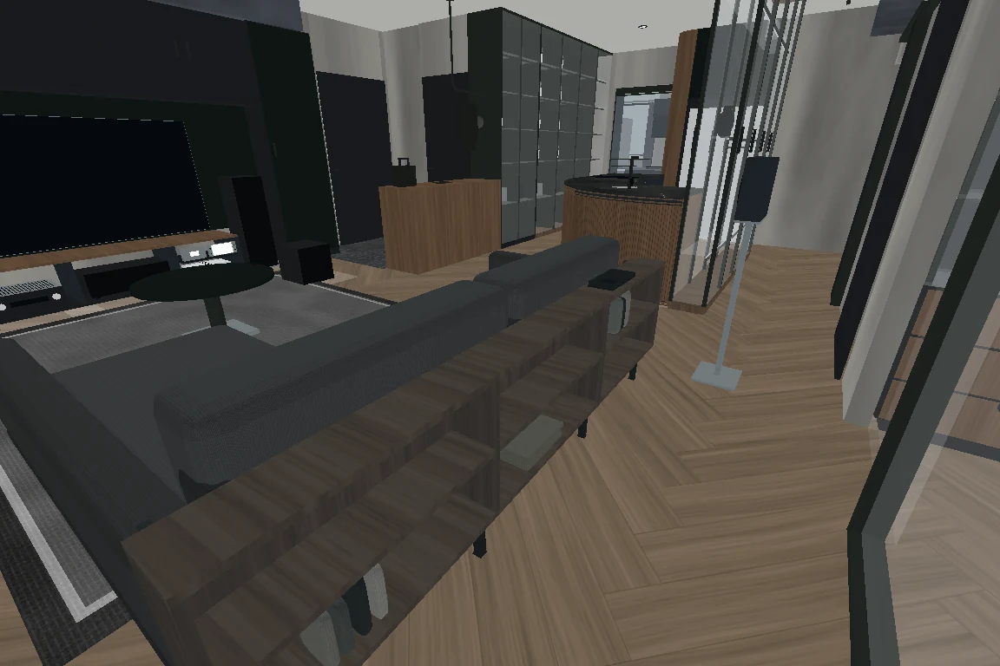
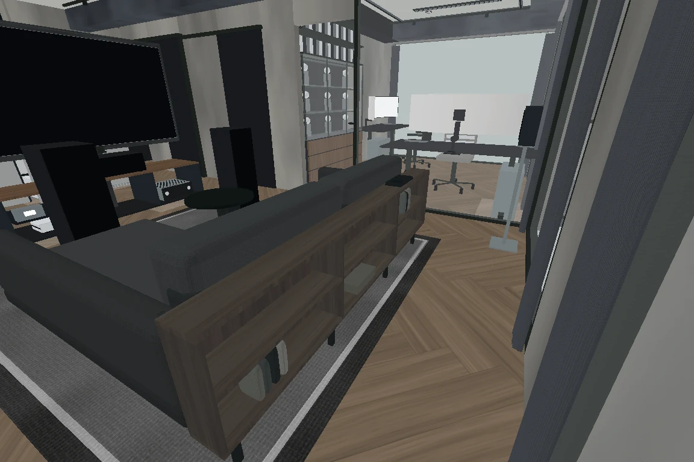
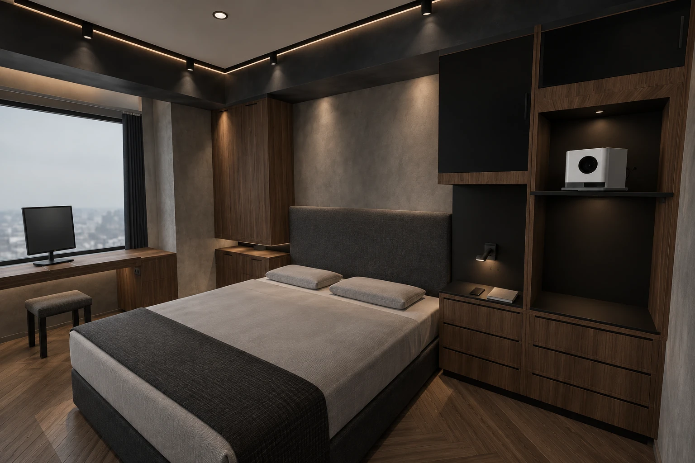
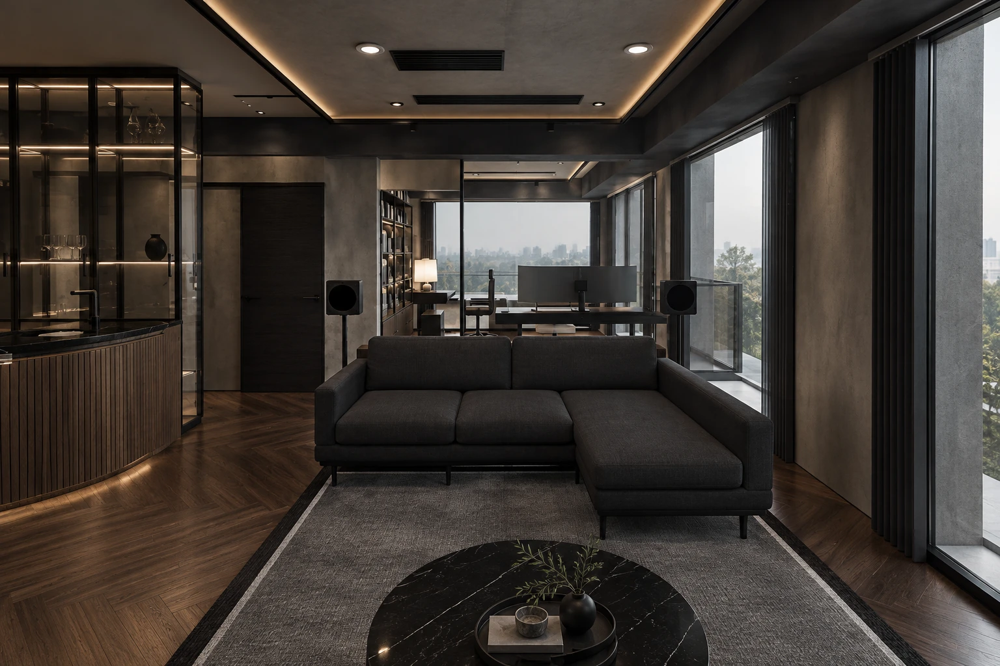

整合背架與座體共用底架，家具可以整件搬走；主臥保留床頭檯面，投影機移到右外側設備格。

背架18cm深、高72cm；座高47cm。深木層板與黑色金屬底架連接座體。

座體向電視前移18cm，靠窗外緣維持原位。V3採同一定位原則。

H70日常檯面與抽屜保留；投影機層板移至外側H150設備格，枕頭上方不再懸掛投影機。

五版皆換成整合背架L型沙發。AI圖可回圖集逐張切換來源模型。
來源模型為實際程式幾何的離線輸出；AI為材質與光影意向。家具承載、止滑、投影畫質與現場施工須另核對，未作耐震或實機GPU認證。